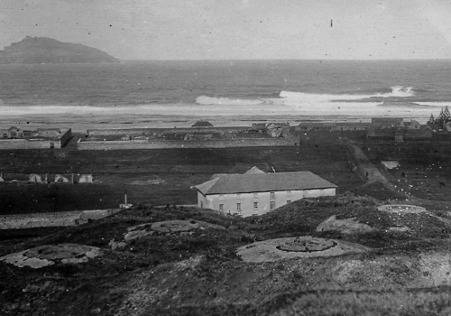

Longridge
Locations of KAVHA
Its uses during the Second Settlement
Planning for a major building program in the Longridge area began in 1839. The main purpose of Longridge was as an agricultural settlement with the prisoners providing the labour for the farms. A wooden Barracks made up of three buildings was built there under Captain Maconochie as a separate prison to accommodate newly arrived convicts. All together they held 167 prisoners. There were also all the buildings needed for the large agricultural activities carried out there and numbered around 35. Some families lived at Longridge. Among them was the family of Gilbert Robertson, the Superintendant of Agriculture from 1845. His daughter, Elizabeth wrote a detailed diary about her life there until her death in 1847 which gives detail on the way of life at Longridge. See Elizabeth Robertson’s Diary Norfolk Island 1845 (ed Merval Hoare).
Its uses during the Third Settlement
When the Pitcairners moved to Norfolk Island from Pitcairn Island in 1856, some of them lived in buildings at Longridge. Members of the Nobbs family lived in what is now Branka House until World War II.
Its uses today
Much of the Longridge area is now used for farming and houses have been built in the area. The Arches remain from the Second Settlement buildings at Longridge. Unfortunately its use and history are unknown.